في مقالتي السابقة «تجربتي لبناء تطبيقات الذكاء الاصطناعي التطبيقي في السحابة السيادية» تحدثت عن تجربتي مع نماذج الذكاء الاصطناعي، بداية من LLMs وRAG وصولًا إلى Agentic Workflows، وكيف يمكن الاستفادة منها في بناء تطبيقات عملية.
في هذه المقالة أحببت أن أشارككم تجربة أخرى، وهي الاستفادة من أدوات الذكاء الاصطناعي في إنشاء موقعي الشخصي، بداية من حجز النطاق وإعداد البريد الإلكتروني إلى بناء الموقع ونشره وتطويره. وخلال التجربة توسع الموضوع من موقع واحد إلى عدة مواقع وأدوات.
بذكر لكم الخطوات التي اتبعتها، والأدوات التي استخدمتها، وبعض الملاحظات التي خرجت فيها من التجربة.
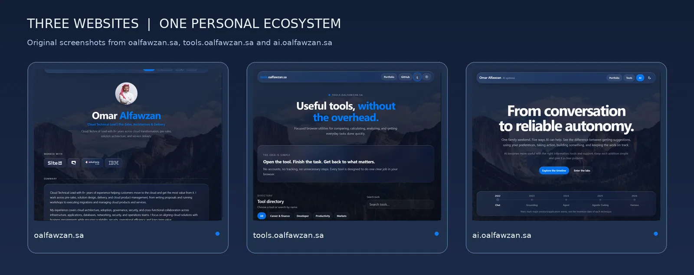
حجز النطاق السعودي (.sa)
في البداية كنت أحتاج نطاقًا خاصًا بالموقع، وفضلت أن يكون نطاقًا سعوديًا يحمل اسمي، فاخترت oalfawzan.sa.
استخدمت Souq T2 لحجز النطاق، وكانت تجربتي معهم ممتازة من ناحية سهولة استخدام الموقع ووضوح إجراءات التسجيل. كنت أتوقع أن إجراءات النطاقات السعودية تكون أصعب قليلًا، لكن عملية البحث عن النطاق وتسجيله كانت واضحة ومباشرة.
بعد تسجيل النطاق أصبح بإمكاني استخدامه للموقع الرئيسي، وإضافة نطاقات فرعية (Subdomains) لمشاريع أخرى مستقبلًا. وبلغت تكلفة النطاق في تجربتي 60 ريالًا سنويًا.
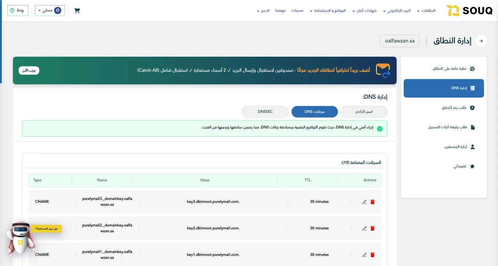
إعداد البريد الإلكتروني
بعد حجز النطاق، انتقلت إلى إنشاء بريد إلكتروني مرتبط به. بحثت عن عدة خدمات لاستضافة البريد الإلكتروني، لكن احتياجي كان بسيطًا ولا يتطلب جميع المميزات التي توفرها باقات البريد الموجهة للشركات.
اخترت Purelymail لأن تكلفته منخفضة ويؤدي الغرض بالنسبة لي، حيث بلغت التكلفة تقريبًا 40 ريالًا سنويًا.
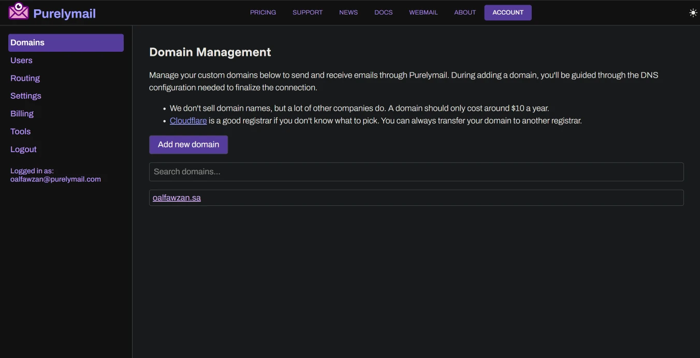
طبعًا بعد الاشتراك تحتاج إلى ضبط سجلات DNS الخاصة بالبريد، مثل MX وSPF وDKIM. وهنا استفدت من ChatGPT في فهم وظيفة السجلات ومراجعة الإعدادات المطلوبة قبل تطبيقها.
الشيء الذي لاحظته خلال هذه الخطوة أن الاستفادة من الذكاء الاصطناعي لا تقتصر على البرمجة. حتى الإجراءات التقنية المحيطة بالمشروع أصبحت أسهل من ناحية البحث والفهم والتنفيذ.
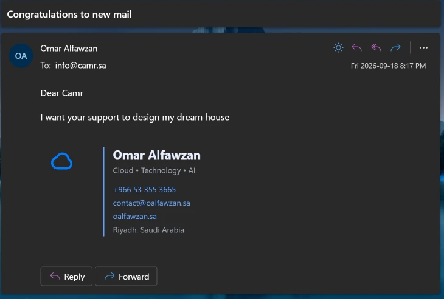
بناء الموقع باستخدام أدوات الذكاء الاصطناعي
بعد الانتهاء من النطاق والبريد الإلكتروني بدأت المرحلة الأساسية، وهي بناء الموقع.
عادةً يحتاج تطوير المواقع إلى معرفة بلغات مثل HTML وCSS وJavaScript، بالإضافة إلى التعامل مع التصميم وتجربة المستخدم والتأكد من عمل الصفحات على مختلف الأجهزة. هذه المهارات ما زالت مهمة، لكن طريقة تنفيذ المشروع تغيرت بشكل كبير مع أدوات الذكاء الاصطناعي.
خلال تجربتي استخدمت ChatGPT وCodex وOpenCode. استخدمت ChatGPT لمناقشة الأفكار وترتيب المحتوى والتصميم ومراجعة الملاحظات، ثم استخدمت Codex وOpenCode للتعامل مع ملفات المشروع وتنفيذ التعديلات البرمجية.
في البداية كنت أشرح المطلوب، مثل طريقة عرض الخبرات المهنية والمشاريع، واختيار التصميم المناسب، وطريقة التنقل بين الصفحات. وبعدها أراجع النتيجة وأطلب التعديلات التي أحتاجها.
من أكثر الأشياء التي أعجبتني أني ما عدت أحتاج أبدأ دائمًا من كتابة الكود. بدلًا من البحث عن طريقة تنفيذ كل تفصيلة، أصبحت أشرح النتيجة التي أريد الوصول إليها ثم أراجع الحل وأجربه.
مثلًا، أقدر أطلب تحسين تصميم قسم معين مع المحافظة على الهوية الحالية للموقع، أو إضافة صفحة جديدة، أو معالجة مشكلة تظهر فقط على شاشة الجوال.
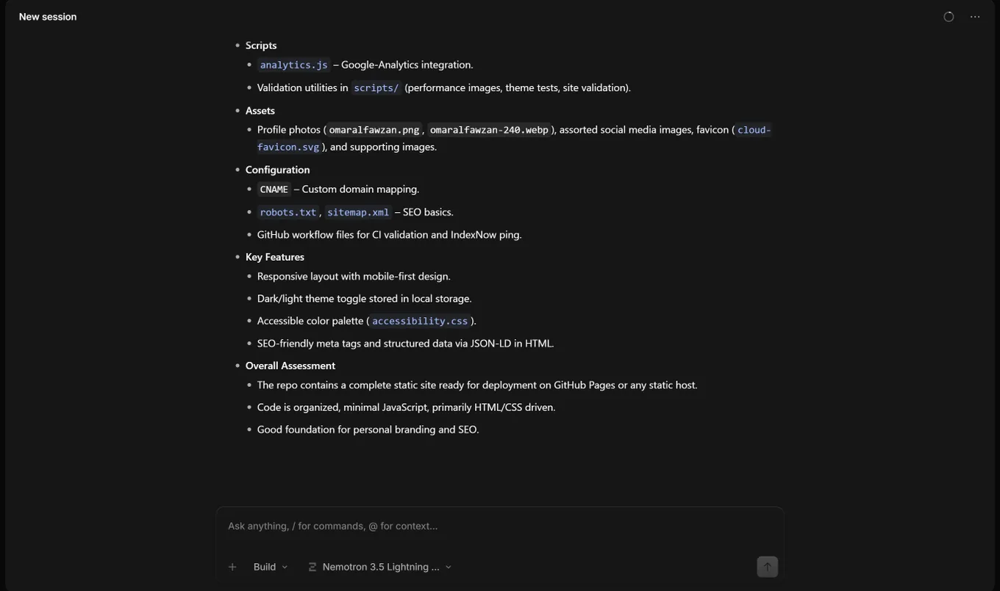
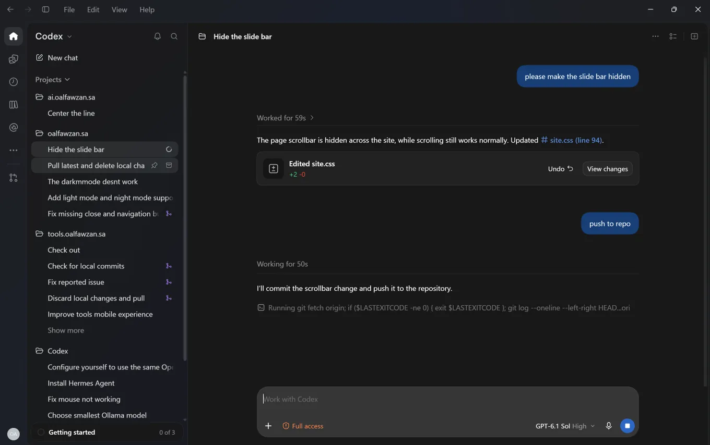
طبعًا النتائج ليست صحيحة دائمًا من المحاولة الأولى. أحيانًا يتم تعديل جزء غير مطلوب، أو يكون الحل أعقد من اللازم، ولذلك أراجع التغييرات وأختبرها قبل نشرها.
استضافة الموقع باستخدام GitHub Pages
بعد بناء النسخة الأولى، احتجت إلى استضافة لنشر الموقع على الإنترنت. اخترت GitHub Pages، وهي خدمة تسمح بنشر المواقع الثابتة (Static Websites) من مستودعات GitHub.
بما أن الموقع مبني باستخدام HTML وCSS وJavaScript، كانت الخدمة مناسبة لاحتياجي. أنشأت مستودعًا (Repository) للموقع، ثم فعّلت GitHub Pages وربطته بالنطاق الخاص بي عن طريق إعداد Custom Domain وسجلات DNS المطلوبة.
استفدت من ChatGPT أيضًا في هذه الخطوة، خصوصًا في فهم إعدادات الربط والتحقق من السجلات المطلوبة.
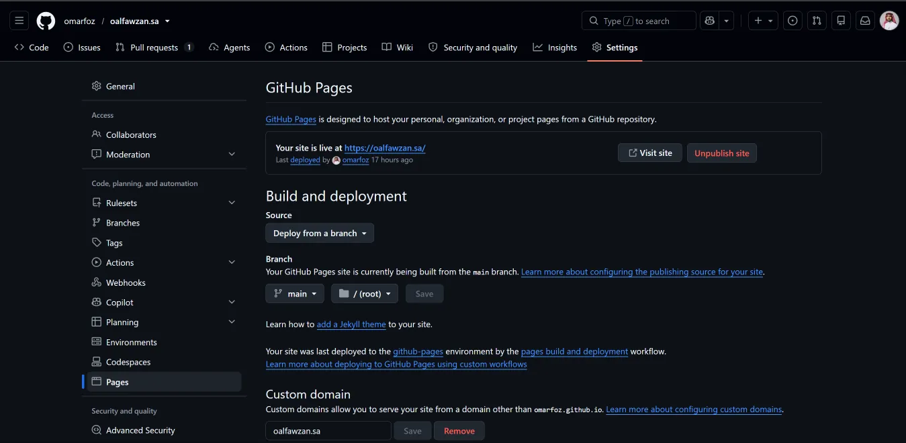
الميزة بالنسبة لي أن ملفات الموقع أصبحت موجودة على GitHub، وعند اعتماد تغييرات جديدة يمكن نشرها من نفس المستودع، دون الحاجة إلى إدارة خادم أو رفع الملفات يدويًا في كل مرة.
تطوير الموقع من خلال المحادثة
من أكثر الأمور التي استفدت منها خلال التجربة سهولة تعديل الموقع بعد نشره.
عادةً تظهر أفكار وملاحظات جديدة مع استخدام الموقع، سواء في التصميم أو المحتوى أو تجربة الجوال. والآن أصبحت كثير من هذه التعديلات تبدأ بمحادثة مع ChatGPT.
أحد الأمثلة الفعلية كان في موقع ai.oalfawzan.sa، عندما لاحظت أن شريط التنقل (Toolbar) لا يتطابق مع تصميم موقعي الرئيسي. أرسلت صورًا للموقعين وطلبت مقارنة التصميم ثم معالجة الاختلاف مع المحافظة على الروابط والوظائف الموجودة.
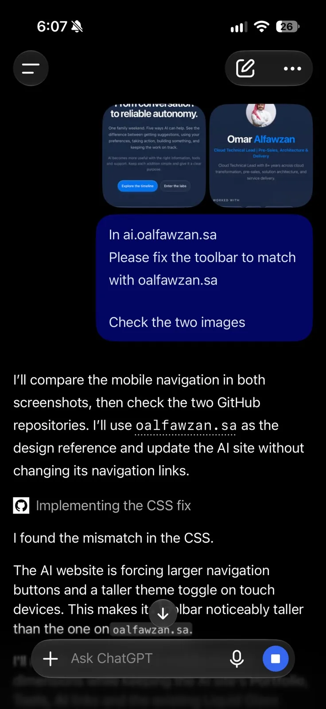
بعدها راجعت الأداة ملفات المشروع وحددت الفروقات في CSS، ثم عرضت لي ملخصًا بالتعديلات المنفذة ورفعها إلى GitHub، مع توضيح أن التحقق من النتيجة النهائية على الموقع المنشور يبقى خطوة مستقلة.
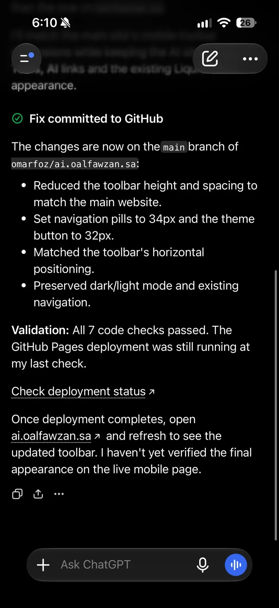
هذا النوع من التعديلات يوضح الفكرة التي أقصدها: بدل ما أبدأ كل مرة من مراجعة الملفات يدويًا، أشرح المشكلة، وتساعدني الأداة على تحديد السبب وتنفيذ الحل، وبعدها أراجع النتيجة.
من موقع شخصي إلى عدة مشاريع
في البداية كان الهدف إنشاء موقع شخصي لعرض الخبرة والمشاريع والمقالات. وبعد إطلاق oalfawzan.sa بدأت أستفيد من نفس التجربة في تنفيذ أفكار أخرى.
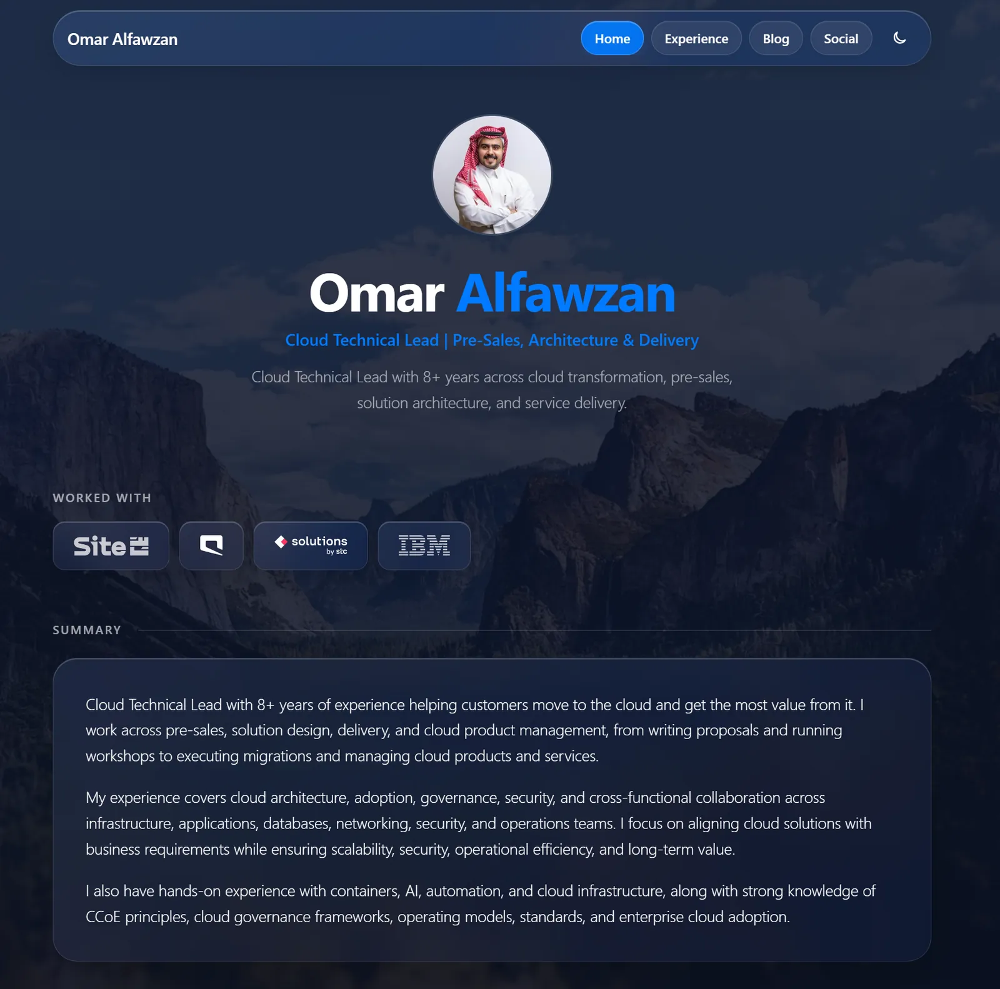
موقع الأدوات tools.oalfawzan.sa
أنشأت tools.oalfawzan.sa ليكون مساحة لأدوات بسيطة ومفيدة يمكن استخدامها مباشرة من المتصفح.
الفكرة أن بعض الاحتياجات اليومية ما تحتاج تطبيقًا كبيرًا. أحيانًا تكون عندي فكرة صغيرة، وأقدر أشرحها لأدوات الذكاء الاصطناعي وأبني نسخة أولية ثم أجربها وأعدل عليها.
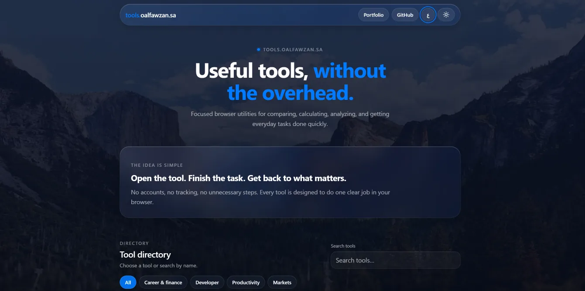
موقع الذكاء الاصطناعي ai.oalfawzan.sa
كذلك أنشأت ai.oalfawzan.sa لعرض بعض المفاهيم والتجارب المتعلقة بالذكاء الاصطناعي، مع تقديمها بشكل تفاعلي.
من الأشياء التي استفدت منها في تطوير هذه المواقع إمكانية المحافظة على الهوية البصرية نفسها، وإعادة استخدام بعض المكونات بدل البدء من الصفر في كل مرة.
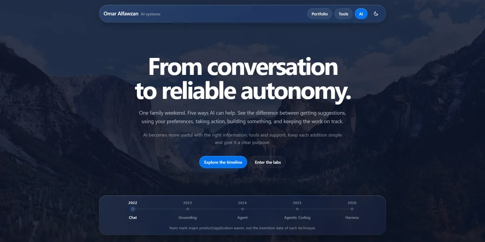
التكاليف باختصار
بلغت تكلفة النطاق السعودي في تجربتي حوالي 60 ريالًا سنويًا، والبريد الإلكتروني عبر Purelymail حوالي 40 ريالًا سنويًا، أما استضافة المواقع الثابتة باستخدام GitHub Pages فكانت دون تكلفة إضافية.
وبالنسبة إلى ChatGPT، فأستخدم اشتراكًا بحوالي 90 ريالًا شهريًا، لكن هذا الاشتراك أستفيد منه في العمل والبحث والتطوير واستخدامات أخرى، وليس مخصصًا للمواقع فقط. وقد تختلف تكاليف أدوات البرمجة حسب طريقة استخدامها والاشتراكات المرتبطة بها.
هل تحتاج إلى خبرة في البرمجة؟
من خلال تجربتي، أرى أن وجود خلفية تقنية يساعد كثيرًا في فهم الحلول ومراجعة جودتها واكتشاف الأخطاء، خصوصًا عند التعامل مع أمور مثل DNS أو GitHub أو ملفات المشروع.
لكن في المقابل، أصبح بإمكان الشخص الذي ليست لديه خبرة متقدمة أن يبدأ بموقع بسيط، ويسأل عن الخطوات التي لا يعرفها، ويتعلم أثناء التنفيذ.
وهذا لا يعني الاعتماد على الذكاء الاصطناعي دون مراجعة. من المهم التحقق من النتائج، والاحتفاظ بنسخ من العمل، وعدم مشاركة كلمات المرور أو المعلومات السرية مع الأدوات.
الخلاصة
في مقالتي السابقة تحدثت عن بناء تطبيقات الذكاء الاصطناعي، أما في هذه المقالة فكانت التجربة في استخدام الذكاء الاصطناعي لبناء مواقع ونشرها وتطويرها.
بدأت بموقع شخصي، ثم توسعت التجربة إلى موقع للأدوات وموقع لتجارب الذكاء الاصطناعي. وخلال هذه الرحلة استخدمت الأدوات في التخطيط والتصميم والبرمجة وحل المشكلات والنشر.
أهم ما لاحظته هو أن المسافة بين الفكرة وتنفيذها أصبحت أقصر بكثير، وأصبحت أقدر أجرب أفكارًا صغيرة وأطورها بشكل مستمر، بدلًا من تأجيلها بسبب الوقت المطلوب لتنفيذها.
أحببت مشاركة هذه التجربة لعلها تكون مفيدة لأي شخص يفكر في إنشاء موقع شخصي أو تجربة مشروع بسيط باستخدام الذكاء الاصطناعي.